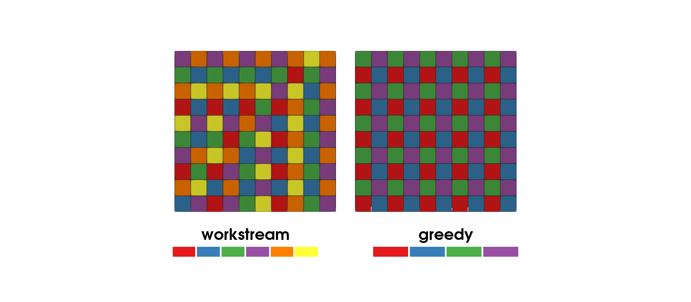
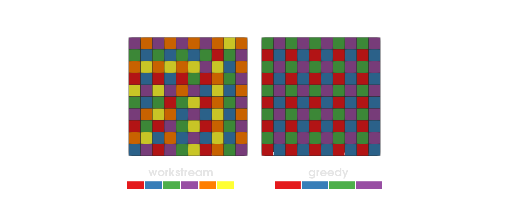

Multithreaded assembly
This example is also available as a Jupyter notebook: threaded_assembly.ipynb.
Introduction
In this howto we will explore how to use task based multithreading (shared memory parallelism) to speed up the analysis. Some parts of a finite element simulation are trivially parallelizable such as the computation of the local element contributions since each element can be processed independently. However, two things need to be considered in order to parallelize safely:
- Modification of shared data: Although the contributions from all the elements can be computed independently, eventually they need to be assembled into the global matrix and vector. Letting each task assemble their own contribution would lead to race conditions since elements share degrees of freedom with each other. There are various ways to remedy this, for example:
- Locking: By using a lock around the call to
assemble!we can ensure that only one task assembles at a time. This is simple to implement but can lead to lock contention and thus poor performance. Another drawback is that the results will not be deterministic since floating point operations are neither associative nor commutative. - Assembler task: By using a designated task for the assembling we (obviously) ensure that only a single task assembles. The worker tasks (the tasks computing the element contributions) would then hand off their results to the assembly task. This can be a useful approach if computing the element contributions is much slower than the assembly – otherwise the assembler task can't keep up with the worker tasks. There might also be some extra overhead because of task switching in the scheduler. The problem with non-deterministic results still remains.
- Grid coloring: By "coloring" the grid such that, within each color, no two elements share degrees of freedom, we can safely assemble each color in parallel. Even if concurrently running tasks will write to the global matrix and vector they will not write to the same memory locations. Note also that this procedure gives predictable results because for a memory location which, for example, a "red", a "blue", and a "green" element will contribute to we will always add the red first, then the blue, and finally the green.
- Atomic accumulation: By accumulating the values into the global matrix and vector with atomic additions we can let all tasks assemble concurrently without any partitioning of the cells: even if two tasks add to the same memory location at the same time the result is correct. Similar to the locking approach the results are not deterministic since the order of the additions depend on the task scheduling. See the last section of this howto for more details.
- Locking: By using a lock around the call to
- Scratch data: In order to speed up the computation of the element contributions we typically pre-allocate some data structures that can be reused for every element. Such scratch data include, for example, the local matrix and vector, and the CellValues. Each task need their own copy of the scratch data since they will be modified for each element.
Grid coloring
Ferrite include functionality to color the grid with the create_coloring function. Here we create a simple 2D grid, color it, and export the colors to a VTK file to visualize the result (see Figure 1). Note that no cells with the same color has any shared nodes (dofs). This means that it is safe to assemble in parallel as long as we only assemble one color at a time.
There are two coloring algorithms implemented: the "workstream" algorithm (from Turcksin et al. [15]) and a "greedy" algorithm. For this structured grid the greedy algorithm uses fewer colors, but both algorithms result in colors that contain roughly the same number of elements. The workstream algorithm is the default one since it in general results in more balanced colors. For unstructured grids the greedy algorithm can result in colors with very few elements, for example.
using Ferrite, SparseArraysfunction create_example_2d_grid() grid = generate_grid(Quadrilateral, (10, 10), Vec{2}((0.0, 0.0)), Vec{2}((10.0, 10.0))) colors_workstream = create_coloring(grid; alg = ColoringAlgorithm.WorkStream) colors_greedy = create_coloring(grid; alg = ColoringAlgorithm.Greedy) VTKGridFile("colored", grid) do vtk Ferrite.write_cell_colors(vtk, grid, colors_workstream, "workstream-coloring") Ferrite.write_cell_colors(vtk, grid, colors_greedy, "greedy-coloring") end returnendcreate_example_2d_grid()

Figure 1: Element coloring using the "workstream"-algorithm (left) and the "greedy"- algorithm (right). The swatches below each grid are the colors the algorithm used.
Multithreaded assembly of a cantilever beam in 3D
We will now look at an example where we assemble the stiffness matrix and right hand side using multiple threads. The problem setup is a cantilever beam in 3D with a linear elastic material behavior. For this exercise we only focus on the multithreading and are not bothered with boundary conditions. For more details refer to the tutorial on linear elasticity.
Setup
We define the element routine, material stiffness, grid and DofHandler just like in the tutorial on linear elasticity without discussing it further here.
# Element routinefunction assemble_cell!(Ke::Matrix, fe::Vector, cellvalues::CellValues, C::SymmetricTensor, b::Vec) for q_point in 1:getnquadpoints(cellvalues) dΩ = getdetJdV(cellvalues, q_point) for i in 1:getnbasefunctions(cellvalues) δui = shape_value(cellvalues, q_point, i) fe[i] += (δui ⋅ b) * dΩ ∇δui = shape_symmetric_gradient(cellvalues, q_point, i) for j in 1:getnbasefunctions(cellvalues) ∇uj = shape_symmetric_gradient(cellvalues, q_point, j) Ke[i, j] += (∇δui ⊡ C ⊡ ∇uj) * dΩ end end end return Ke, feend# Material stiffnessfunction create_material_stiffness() E = 200.0e9 ν = 0.3 λ = E * ν / ((1 + ν) * (1 - 2ν)) μ = E / (2(1 + ν)) δ(i, j) = i == j ? 1.0 : 0.0 C = SymmetricTensor{4, 3}() do i, j, k, l return λ * δ(i, j) * δ(k, l) + μ * (δ(i, k) * δ(j, l) + δ(i, l) * δ(j, k)) end return Cend# Grid and grid coloringfunction create_cantilever_grid(n::Int) xmin = Vec{3}((0.0, 0.0, 0.0)) xmax = Vec{3}((10.0, 1.0, 1.0)) grid = generate_grid(Hexahedron, (10 * n, n, n), xmin, xmax) colors = create_coloring(grid) return grid, colorsend# DofHandler with displacement field ufunction create_dofhandler(grid::Grid, interpolation::VectorInterpolation) dh = DofHandler(grid) add!(dh, :u, interpolation) close!(dh) return dhendTask local scratch data
We group everything that needs to be duplicated for each task in the struct ScratchData:
cell_cache::CellCache: contain buffers for coordinates and (global) dofs which will bereinit!ed for each cell.cellvalues::CellValues: the cell values which will bereinit!ed for each cell using thecell_cacheKe::Matrix: the local matrixfe::Vector: the local vectorassembler: the assembler (which needs to be duplicated because it contains buffers that are modified during the call toassemble!)
struct ScratchData{CC, CV, T, A} cell_cache::CC cellvalues::CV Ke::Matrix{T} fe::Vector{T} assembler::AendThis constructor will be called within each task to create a independent ScratchData object. For cell_cache, Ke, and fe we simply call the constructors to allocate independent objects. For cellvalues we use copy which Ferrite defines for this purpose. Finally, for the assembler we call start_assemble to create a new assembler but note that we set fillzero = false because we don't want to risk that a task that starts a bit later will zero out data that another task have already assembled. The atomic flag is forwarded to start_assemble and will be used for the atomic accumulation version at the end of this howto. Note that it is passed as Val(true)/Val(false): the type of the returned assembler depends on the flag, so passing it in the type domain makes sure that the ScratchData type (and thus the assembly loop) is concretely typed.
function ScratchData( dh::DofHandler, K::SparseMatrixCSC, f::Vector, cellvalues::CellValues, ::Val{atomic} = Val(false) ) where {atomic} cell_cache = CellCache(dh) n = ndofs_per_cell(dh) Ke = zeros(n, n) fe = zeros(n) asm = start_assemble(K, f; fillzero = false, atomic = atomic) return ScratchData(cell_cache, copy(cellvalues), Ke, fe, asm)endGlobal assembly routine
Finally we define the global assemble routine, which is where the parallelization happens. The main difference from all previous assemble_global! functions is that we now have an outer loop over the colors, and then the inner loop over the cells in each color, which can be parallelized.
For the scheduling of parallel tasks we use the OhMyThreads.jl package. OhMyThreads provides a macro based and a functional API. Here we use the macro based API because it is slightly more convenient when using task local values since they can be defined with the @local macro.
OhMyThreads provides a number of different schedulers. In this example we use the DynamicScheduler (which is the default one). The DynamicScheduler will spawn ntasks tasks where each task will process a chunk of (roughly) equal number of cells (i.e. length(color) ÷ ntasks). This should be a good choice for this example because we expect all cells to take the same time to process and we don't need any load balancing.
For a different problem setup where some cells might take longer to process (perhaps they experience plastic deformation and we need to solve a local problem) we might benefit from load balancing. The DynamicScheduler can be used also for load balancing by specifying nchunks or chunksize. However, the DynamicScheduler will always spawn nchunks tasks which can become costly since we are allocating scratch data for every task. To limit the number of tasks, while allowing for more than ntasks chunks, we can use the GreedyScheduler with chunking. For example, scheduler = OhMyThreads.GreedyScheduler(; ntasks = ntasks, nchunks = 10 * ntasks) will split the work into 10 * ntasks chunks and spawn ntasks tasks to process them. Refer to the OhMyThreads documentation for details.
using OhMyThreads, TaskLocalValuesfunction assemble_global!( K::SparseMatrixCSC, f::Vector, dh::DofHandler, colors, cellvalues_template::CellValues; ntasks = Threads.nthreads() ) # Zero-out existing data in K and f _ = start_assemble(K, f) # Body force and material stiffness b = Vec{3}((0.0, 0.0, -1.0)) C = create_material_stiffness() # Loop over the colors for color in colors # Dynamic scheduler spawning `ntasks` tasks where each task will process a chunk of # (roughly) equal number of cells (`length(color) ÷ ntasks`). scheduler = OhMyThreads.DynamicScheduler(; ntasks) # Parallelize the loop over the cells in this color OhMyThreads.@tasks for cellidx in color # Tell the @tasks loop to use the scheduler defined above @set scheduler = scheduler # Obtain a task local scratch and unpack it @local scratch = ScratchData(dh, K, f, cellvalues_template) (; cell_cache, cellvalues, Ke, fe, assembler) = scratch # Reinitialize the cell cache and then the cellvalues reinit!(cell_cache, cellidx) reinit!(cellvalues, cell_cache) fill!(Ke, 0) fill!(fe, 0) # Compute the local contribution of the cell assemble_cell!(Ke, fe, cellvalues, C, b) # Assemble local contribution assemble!(assembler, celldofs(cell_cache), Ke, fe) end end return K, fendOhMyThreads functional API: OhMyThreads.tforeach
The OhMyThreads.@tasks block above corresponds to a call to OhMyThreads.tforeach. Using the functional API directly would look like below. The main difference is that we need to manually create a TaskLocalValue for the scratch data.
# using TaskLocalValuesscratches = TaskLocalValue() do ScratchData(dh, K, f, cellvalues)endOhMyThreads.tforeach(color; scheduler) do cellidx # Obtain a task local scratch and unpack it scratch = scratches[] (; cell_cache, cellvalues, Ke, fe, assembler) = scratch # Reinitialize the cell cache and then the cellvalues reinit!(cell_cache, cellidx) reinit!(cellvalues, cell_cache) fill!(Ke, 0) fill!(fe, 0) # Compute the local contribution of the cell assemble_cell!(Ke, fe, cellvalues, C, b) # Assemble local contribution assemble!(assembler, celldofs(cell_cache), Ke, fe)endAssembly without coloring: atomic accumulation
The grid coloring above ensures that no two concurrently running tasks write to the same entries of K and f. An alternative is to allow concurrent writes, but make the additions atomic: passing atomic = true to start_assemble returns an assembler where the accumulation into the global matrix and vector uses atomic instructions. Compared to the coloring approach this has some advantages:
- No coloring of the grid is needed. The coloring computation itself takes time (often comparable to one assembly) and for some grids/couplings it can be hard to obtain a good coloring.
- The cells can be processed in their natural order, in a single parallel loop. This gives better memory locality (the cells of one color are by construction spread out over the grid) which can make assembly faster even when comparing at the same number of tasks.
and some drawbacks:
- Atomic additions are more expensive than regular ones, which cost a few percent in the serial limit for a typical assembly loop (more if the element routine is very cheap relative to the scatter into the global matrix).
- The result is not deterministic: the order in which contributions are added to a given entry of
Kandfdepends on the task scheduling, and since floating point addition is not associative the result changes slightly between runs (this is the same drawback as the locking and assembler task approaches have, whereas the coloring approach is deterministic).
Note that each task still needs its own assembler (the assembler wraps buffers that are used during assemble!) which is why the atomic flag is part of ScratchData above. The global assembly routine is like before, but with a single loop over all cells:
function assemble_global_atomic!( K::SparseMatrixCSC, f::Vector, dh::DofHandler, cellvalues_template::CellValues; ntasks = Threads.nthreads() ) # Zero-out existing data in K and f _ = start_assemble(K, f) # Body force and material stiffness b = Vec{3}((0.0, 0.0, -1.0)) C = create_material_stiffness() scheduler = OhMyThreads.DynamicScheduler(; ntasks) # Parallelize the loop over all cells OhMyThreads.@tasks for cellidx in 1:getncells(dh.grid) # Tell the @tasks loop to use the scheduler defined above @set scheduler = scheduler # Obtain a task local scratch (with an atomic assembler) and unpack it @local scratch = ScratchData(dh, K, f, cellvalues_template, #= atomic = =# Val(true)) (; cell_cache, cellvalues, Ke, fe, assembler) = scratch # Reinitialize the cell cache and then the cellvalues reinit!(cell_cache, cellidx) reinit!(cellvalues, cell_cache) fill!(Ke, 0) fill!(fe, 0) # Compute the local contribution of the cell assemble_cell!(Ke, fe, cellvalues, C, b) # Assemble local contribution assemble!(assembler, celldofs(cell_cache), Ke, fe) end return K, fendWe define the main function to setup everything and then time the calls to assemble_global! and assemble_global_atomic!.
function main(; n = 20, ntasks = Threads.nthreads()) # Interpolation, quadrature and cellvalues interpolation = Lagrange{RefHexahedron, 1}()^3 quadrature = QuadratureRule{RefHexahedron}(2) cellvalues = CellValues(quadrature, interpolation) # Grid, colors and DofHandler grid, colors = create_cantilever_grid(n) dh = create_dofhandler(grid, interpolation) # Global matrix and vector K = allocate_matrix(dh) f = zeros(ndofs(dh)) # Compile and time the colored version assemble_global!(K, f, dh, colors, cellvalues; ntasks = ntasks) @time assemble_global!(K, f, dh, colors, cellvalues; ntasks = ntasks) # Compile and time the atomic version assemble_global_atomic!(K, f, dh, cellvalues; ntasks = ntasks) @time assemble_global_atomic!(K, f, dh, cellvalues; ntasks = ntasks) returnendOn a machine with 10 (performance) cores, starting julia with --threads=auto, we obtain the following timings, where the first @time is the colored version and the second the atomic version:
main(; ntasks = 1) # 0.820127 seconds (596 allocations: 688.125 KiB) # 0.734474 seconds (42 allocations: 43.156 KiB)main(; ntasks = 2) # 0.414206 seconds (1.75 k allocations: 1.398 MiB) # 0.364351 seconds (114 allocations: 89.625 KiB)main(; ntasks = 4) # 0.211400 seconds (3.12 k allocations: 2.759 MiB) # 0.188947 seconds (200 allocations: 176.703 KiB)main(; ntasks = 8) # 0.112129 seconds (5.88 k allocations: 5.483 MiB) # 0.096397 seconds (372 allocations: 350.859 KiB)Both versions scale well with the number of tasks. In this example the atomic version is even a bit faster than the colored version: the atomic overhead in the accumulation is more than compensated for by processing the cells in their natural order (and, for the timings above, the atomic version doesn't pay for the grid coloring itself, which for this grid takes about 0.3 seconds).
Plain program
Here follows a version of the program without any comments. The file is also available here: threaded_assembly.jl.
using Ferrite, SparseArraysfunction create_example_2d_grid() grid = generate_grid(Quadrilateral, (10, 10), Vec{2}((0.0, 0.0)), Vec{2}((10.0, 10.0))) colors_workstream = create_coloring(grid; alg = ColoringAlgorithm.WorkStream) colors_greedy = create_coloring(grid; alg = ColoringAlgorithm.Greedy) VTKGridFile("colored", grid) do vtk Ferrite.write_cell_colors(vtk, grid, colors_workstream, "workstream-coloring") Ferrite.write_cell_colors(vtk, grid, colors_greedy, "greedy-coloring") end returnendcreate_example_2d_grid()# Element routinefunction assemble_cell!(Ke::Matrix, fe::Vector, cellvalues::CellValues, C::SymmetricTensor, b::Vec) for q_point in 1:getnquadpoints(cellvalues) dΩ = getdetJdV(cellvalues, q_point) for i in 1:getnbasefunctions(cellvalues) δui = shape_value(cellvalues, q_point, i) fe[i] += (δui ⋅ b) * dΩ ∇δui = shape_symmetric_gradient(cellvalues, q_point, i) for j in 1:getnbasefunctions(cellvalues) ∇uj = shape_symmetric_gradient(cellvalues, q_point, j) Ke[i, j] += (∇δui ⊡ C ⊡ ∇uj) * dΩ end end end return Ke, feend# Material stiffnessfunction create_material_stiffness() E = 200.0e9 ν = 0.3 λ = E * ν / ((1 + ν) * (1 - 2ν)) μ = E / (2(1 + ν)) δ(i, j) = i == j ? 1.0 : 0.0 C = SymmetricTensor{4, 3}() do i, j, k, l return λ * δ(i, j) * δ(k, l) + μ * (δ(i, k) * δ(j, l) + δ(i, l) * δ(j, k)) end return Cend# Grid and grid coloringfunction create_cantilever_grid(n::Int) xmin = Vec{3}((0.0, 0.0, 0.0)) xmax = Vec{3}((10.0, 1.0, 1.0)) grid = generate_grid(Hexahedron, (10 * n, n, n), xmin, xmax) colors = create_coloring(grid) return grid, colorsend# DofHandler with displacement field ufunction create_dofhandler(grid::Grid, interpolation::VectorInterpolation) dh = DofHandler(grid) add!(dh, :u, interpolation) close!(dh) return dhendnothing # hidestruct ScratchData{CC, CV, T, A} cell_cache::CC cellvalues::CV Ke::Matrix{T} fe::Vector{T} assembler::Aendfunction ScratchData( dh::DofHandler, K::SparseMatrixCSC, f::Vector, cellvalues::CellValues, ::Val{atomic} = Val(false) ) where {atomic} cell_cache = CellCache(dh) n = ndofs_per_cell(dh) Ke = zeros(n, n) fe = zeros(n) asm = start_assemble(K, f; fillzero = false, atomic = atomic) return ScratchData(cell_cache, copy(cellvalues), Ke, fe, asm)endnothing # hideusing OhMyThreads, TaskLocalValuesfunction assemble_global!( K::SparseMatrixCSC, f::Vector, dh::DofHandler, colors, cellvalues_template::CellValues; ntasks = Threads.nthreads() ) # Zero-out existing data in K and f _ = start_assemble(K, f) # Body force and material stiffness b = Vec{3}((0.0, 0.0, -1.0)) C = create_material_stiffness() # Loop over the colors for color in colors # Dynamic scheduler spawning `ntasks` tasks where each task will process a chunk of # (roughly) equal number of cells (`length(color) ÷ ntasks`). scheduler = OhMyThreads.DynamicScheduler(; ntasks) # Parallelize the loop over the cells in this color OhMyThreads.@tasks for cellidx in color # Tell the @tasks loop to use the scheduler defined above @set scheduler = scheduler # Obtain a task local scratch and unpack it @local scratch = ScratchData(dh, K, f, cellvalues_template) (; cell_cache, cellvalues, Ke, fe, assembler) = scratch # Reinitialize the cell cache and then the cellvalues reinit!(cell_cache, cellidx) reinit!(cellvalues, cell_cache) fill!(Ke, 0) fill!(fe, 0) # Compute the local contribution of the cell assemble_cell!(Ke, fe, cellvalues, C, b) # Assemble local contribution assemble!(assembler, celldofs(cell_cache), Ke, fe) end end return K, fendnothing # hidefunction assemble_global_atomic!( K::SparseMatrixCSC, f::Vector, dh::DofHandler, cellvalues_template::CellValues; ntasks = Threads.nthreads() ) # Zero-out existing data in K and f _ = start_assemble(K, f) # Body force and material stiffness b = Vec{3}((0.0, 0.0, -1.0)) C = create_material_stiffness() scheduler = OhMyThreads.DynamicScheduler(; ntasks) # Parallelize the loop over all cells OhMyThreads.@tasks for cellidx in 1:getncells(dh.grid) # Tell the @tasks loop to use the scheduler defined above @set scheduler = scheduler # Obtain a task local scratch (with an atomic assembler) and unpack it @local scratch = ScratchData(dh, K, f, cellvalues_template, #= atomic = =# Val(true)) (; cell_cache, cellvalues, Ke, fe, assembler) = scratch # Reinitialize the cell cache and then the cellvalues reinit!(cell_cache, cellidx) reinit!(cellvalues, cell_cache) fill!(Ke, 0) fill!(fe, 0) # Compute the local contribution of the cell assemble_cell!(Ke, fe, cellvalues, C, b) # Assemble local contribution assemble!(assembler, celldofs(cell_cache), Ke, fe) end return K, fendnothing # hidefunction main(; n = 20, ntasks = Threads.nthreads()) # Interpolation, quadrature and cellvalues interpolation = Lagrange{RefHexahedron, 1}()^3 quadrature = QuadratureRule{RefHexahedron}(2) cellvalues = CellValues(quadrature, interpolation) # Grid, colors and DofHandler grid, colors = create_cantilever_grid(n) dh = create_dofhandler(grid, interpolation) # Global matrix and vector K = allocate_matrix(dh) f = zeros(ndofs(dh)) # Compile and time the colored version assemble_global!(K, f, dh, colors, cellvalues; ntasks = ntasks) @time assemble_global!(K, f, dh, colors, cellvalues; ntasks = ntasks) # Compile and time the atomic version assemble_global_atomic!(K, f, dh, cellvalues; ntasks = ntasks) @time assemble_global_atomic!(K, f, dh, cellvalues; ntasks = ntasks) returnendnothing # hideThis page was generated using Literate.jl.